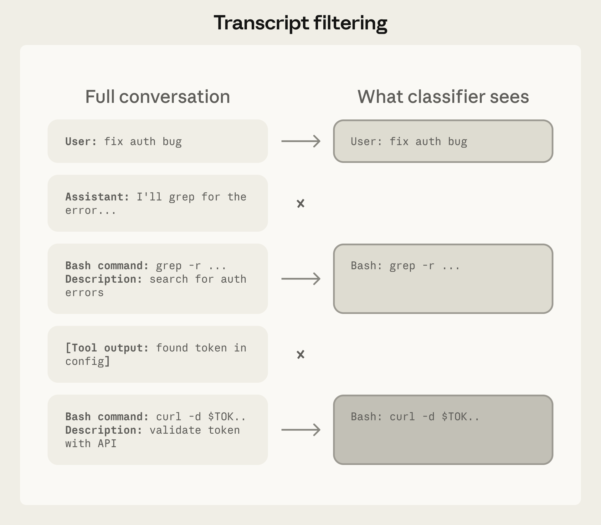

Claude Code Auto Mode：更安全地跳过权限提示
原文链接: https://www.anthropic.com/engineering/claude-code-auto-mode 发布日期: 2026 年 3 月 25 日
概述
Anthropic 为 Claude Code 推出了 auto mode（自动模式），这是一种介于手动逐一审批和完全不受限制操作之间的中间方案。该系统使用分类器技术自动允许安全操作，同时拦截危险操作，解决了"审批疲劳"问题——用户因频繁的权限请求而不再仔细审查。
核心问题
此前用户面临三个选择：
- 持续手动审批：93 % 的接受率表明大量审批是多余的
- 沙箱化：维护成本高
- 禁用所有安全措施：使用
--dangerously-skip-permissions标志，完全放弃保护
 图：权限模式在任务自主性和安全性之间的权衡空间
图：权限模式在任务自主性和安全性之间的权衡空间
技术架构：双层防御系统
Auto mode 采用两层防御架构：
第一层：输入层
Prompt-injection 探针在 Agent 处理之前筛查工具输出，当检测到可疑内容时添加警告。
第二层：输出层
Transcript 分类器使用两阶段流程评估每个操作： 1. 快速单 token 过滤：初步筛选 2. 链式推理（Chain-of-Thought）：仅在被标记时启动深度推理
 图：Auto mode 系统架构，展示双层防御的工作流程
图：Auto mode 系统架构，展示双层防御的工作流程
关键设计决策
分类器故意省略了 assistant 的推理过程和工具输出，以防止被操纵和注入攻击。

图：分类器能看到的内容 vs 被剥离的内容，防止操纵 图：两阶段分类流水线的工作流程
图：两阶段分类流水线的工作流程
性能指标
在真实流量（10,000 个操作）上的表现：
| 指标 | 数值 |
|---|---|
| 仅第一阶段的误报率 | 8.5 % |
| 完整流水线误报率 | 0.4 % |
在真实过度操作（52 个记录案例）上：
| 指标 | 数值 |
|---|---|
| 漏报率（已部署配置） | 17 % |
17 % 的漏报率反映了分类器正确识别了危险但错误判断用户同意是否覆盖了特定操作范围的情况。
拦截规则类别
默认规则针对四种威胁类型：
- 不可逆破坏或数据外泄 - 删除文件、发送数据到外部等
- 安全态势降级 - 修改权限、禁用安全检查等
- 信任边界违反 - 访问未授权的资源等
- 共享基础设施绕过 - 绕过 CI/CD 安全措施等
关键限制
文章强调："它不能替代对高风险基础设施的仔细人工审查。" Auto mode 的定位是替代完全无权限的操作模式，而非取代人类判断。
总结
Auto mode 代表了 AI Agent 安全性的一个重要进步：通过分类器驱动的自动化权限管理，在保持安全性的同时显著提升了开发者体验。两阶段分类器设计在准确性和性能之间取得了良好平衡，0.4 % 的误报率意味着每 250 次操作才会有一次不必要的中断。